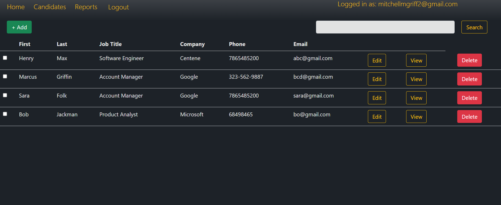
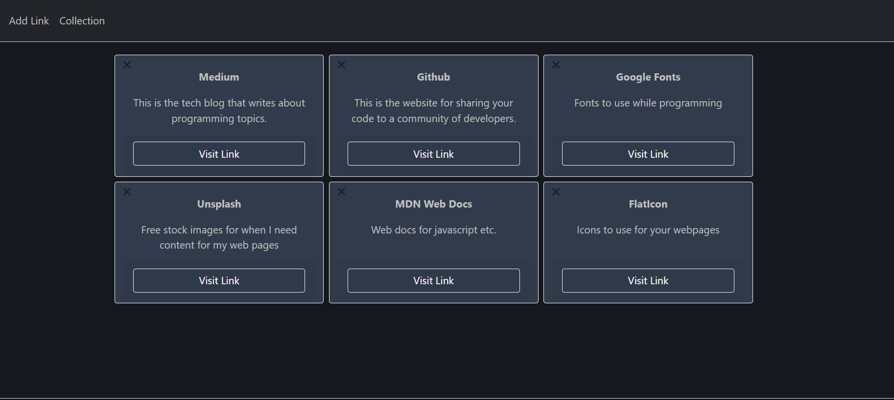
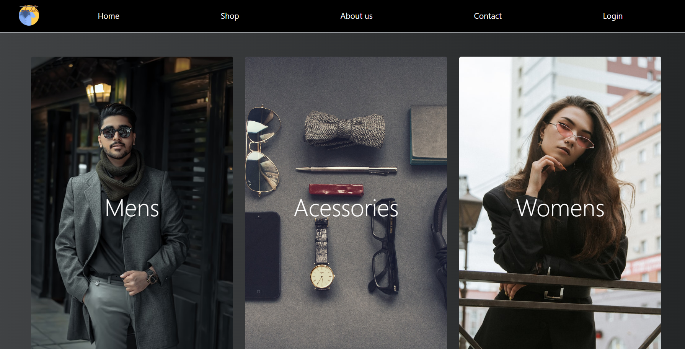
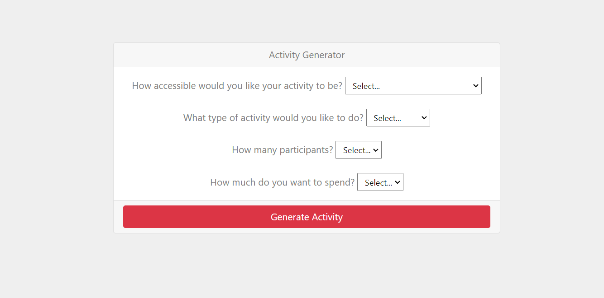

Mitchell Griffiths
Sacramento, CA
Programming/Development: HTML, CSS, JavaScript, jQuery, Bootstrap, C#, Node.js
Frameworks/Libraries: ASP.NET Core, .NET Framework, .NET Core, MVC, Blazor/Razor, LINQ
Database: SQL, MySQL, MS SQL Server, Entity Framework
IDEs: Visual Studio Code, Visual Studio 2022, Notepad++
Project Management: Trello, Azure DevOps
Version Control: TFS/Git, GitHub
Education:
California State University, Chico 2020
Bachelor of Arts - Psychology
Certification in Software Development | The Tech Academy 2023
❖ Immersive Full Stack Software Developer boot camp with more than 600 hours of instruction and hands-on coding. Predominantly the program is based on C# and Python, along with the fundamentals of Computer Science, Django, .NET Framework, MVC, HTML, CSS, JavaScript, T-SQL/SQL, Agile / SCRUM and web application development. Completed numerous practical projects
Experience:
Software Developer Intern | Prosper IT Consulting - Portland, OR 04/23- Present
❖
Skillset used: C#, .NET Framework, .NET Core, ASP.NET, Entity Framework, HTML, CSS, JavaScript, Bootstrap
❖ Created a basic CRM for tracking applicants that allowed clients to see a dashboard that can be filtered to their customization of all relevant data including resumes, contact information, salary ranges and social media profiles.
❖ Designed and implemented the web application using ASP.NET Core, Entity Framework, and SQL Server using T-SQL to query certain changes in the database.
❖ Utilized Entity Framework to model and interact with the database, allowing for easy retrieval and modification of user information with a Code First approach.
❖ Employed HTML, CSS, and Bootstrap to create an intuitive and user-friendly interface for interacting with the web application.
Zeektek November 2021 – Present
Technical Recruiter
❖ Familiar with programming languages and “lingo” to thoroughly understand job descriptions.
❖ Worked in a team environment to be able to schedule interviews, give technical interview preparation and coordinate with Account Manager and Hiring Managers to ensure a smooth hiring process.
Projects

CRM
A basic CRM for tracking applicants that allowed clients to see a dashboard that can be filtered to their customization of all relevant data including resumes, contact information, salary ranges, and social media profiles.
Github Repo
Image

Link Manager
A personal dashboard I made that allowed me to save the links I wanted with descriptions on why I saved them. I utilized Entity Framework and .NET Core for the backend to interact with the database to modify the contents of the dashboard.
Github Repo
Image

E-Commerce
One of my first projects where I wanted to build a shopping cart and basically went around that functionality to make an entire E-commerce shop that allowed you to add items to your shopping cart and go through checkout. I also added functionality on filtering items by type of clothing, accessories, and color.
Github Repo
Image

BoredAPI Integration
I created an integration of the BoredAPI into a .NET Core MVC application to give it a Bootstrap UI and allow me to add customizations to the queries, the API does not return results for certain queries but I thought it would be good practice for integrating third-party APIs in .NET apps..
Github Repo
Image
Portfolio Site
The site that I made for my portfolio I wanted to really hone in my skills with Javascript and decided to make a single-page web application that utilized tabs to show the pages of the portfolio. This project really allowed me to practice my front-end skills.

{kind=link}
{kind=link}
{kind=link}
{kind=link}